Cryptography
One-Time Pad, OTP
One-Time Pad is a cryptographic technique that uses a random key of the same length as the plaintext message. It is theoretically unbreakable if used correctly but impractical because a large amount of storage is required for the key material.
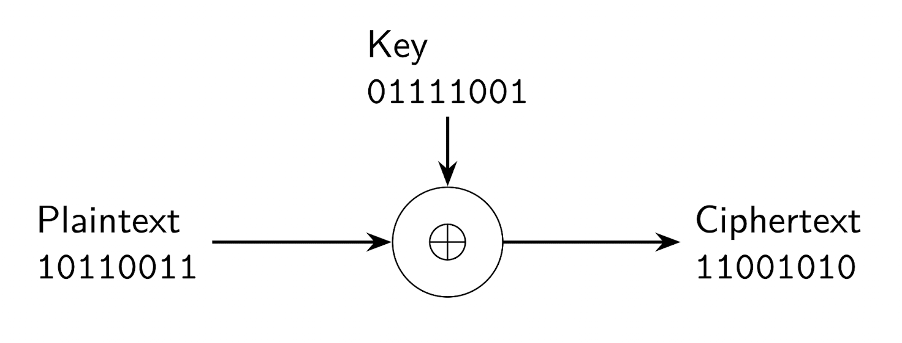The plaintext $P$ is transformed into the ciphertext $C$ using a XOR operation with the key $K$.
$$ C = P \oplus K $$ $$ P = C \oplus K $$The one-time pad must be the same length as the plaintext $P$ and must be newly generated for each encryption.
Perfect security, Information-theoretic security
Means that a cryptographic scheme is secure from an information-theoretic perspective. Even if an attacker tries all possible keys, they gain no information about the original plaintext.
Practical security, Computational security
Means that breaking the encryption is theoretically possible, but computationally infeasible within a reasonable time and with limited resources.
Kerckhoff's principle
Definition
Kerckhoff's Principle states that a cryptographic system should remain secure even if everything about the system, except the key, is public knowledge.
Symmetric encryption
Symmetric encryption is a method of cryptography where the same key is used for both encryption and decryption. It is fast and efficient, making it suitable for encrypting large amounts of data. Both the sender and receiver must securely share the same secret key.
Stream cipher
Definition
A stream cipher is a symmetric encryption algorithm that encrypts data bit by bit or byte by byte. It generates a keystream, which is combined with the plaintext using an XOR operation to produce the ciphertext.
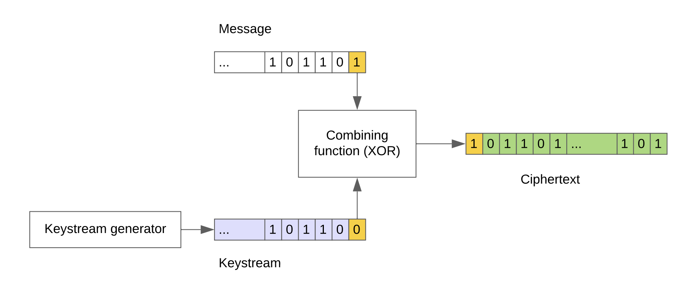Nonce, Initial value, IV
Definition
A nonce is a number or bit string used only once in a cryptographic communication. It is often a random or pseudo-random value that ensures that old communications cannot be reused in replay attacks.
Modern Stream Ciphers
Stream ciphers mimic the principle of a OTP, but generate a pseudo-random keystream $KS$ from a secret key $K$ and a nonce $N$:
$$ KS = SC(K,N) $$-
Decryption:
$$ P = C \oplus KS $$ -
Encryption:
$$ C = P \oplus KS $$
Remark
Compared to OTP, stream ciphers are practical because the keystream can be generated on the fly from a short key, rather than requiring a key as long as the message.
Reusing a nonce
Reusing a nonce with the same key in stream ciphers can lead to serious
security vulnerabilities. If an attacker knows or can guess the
plaintext of one message, they can easily derive the keystream and use
it to decrypt other messages encrypted with the same nonce and key.
Same key and same nonce imply the same keystream $KS$:
An attacker can always compute:
$$ C_1 \oplus C_2 = P_1 \oplus P_2 $$Feedback Shift Registers, FSR
A Feedback Shift Register or FSR, is a type of shift register used in stream ciphers to generate a pseudo-random keystream. It consists of a series of flip-flops connected in a linear or non-linear feedback configuration.
Linear and Non-Linear FSR
A linear FSR uses only XOR operations in its feedback function, while a non-linear FSR uses more complex functions. Non-linear FSRs are generally more secure and harder to break. For cryptographic security, FSRs must have long periods and be combined with non-linear functions. Practical designs combine several LFSRs with a non-linear combining function to produce a less predictable keystream.
Block cipher
Definition
A block cipher is a symmetric encryption algorithm that operates on fixed-size blocks of data. It uses a secret key $K$ to transform a plaintext block $P$ into a ciphertext block $C$, and vice versa.
-
Encryption:
$C= E (K , P)$ -
Decryption:
$P= D (K , C)$
AES, Advanced Encryption Standard
AES is a widely used symmetric block cipher that operates on 128-bit blocks and supports key sizes of 128, 192, or 256 bits. It is known for its security and efficiency and is used in various applications, including secure communications and data storage.
Electronic Codebook Mode, ECB
ECB is a mode of operation for block ciphers where each block of plaintext is encrypted independently. This can lead to patterns in the ciphertext if the same plaintext blocks are encrypted.
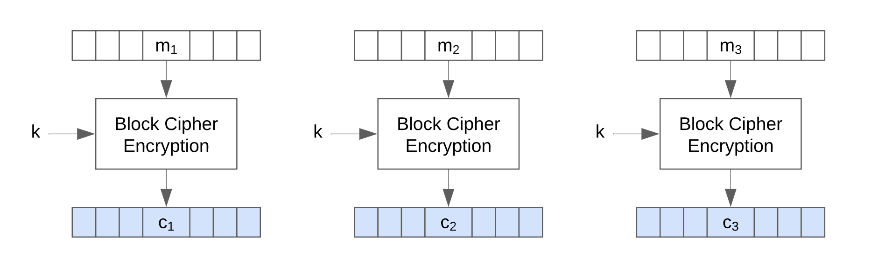Cipher Block Chaining, CBC
CBC is a mode of operation for block ciphers where each block of plaintext is XORed with the previous ciphertext block before being encrypted. This ensures that identical plaintext blocks produce different ciphertext blocks, making patterns less visible.
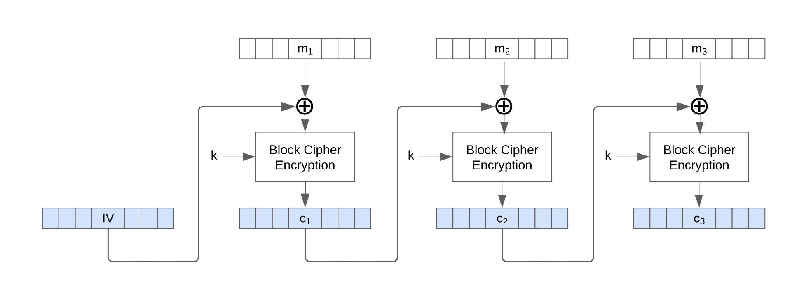Counter Mode, CTR, AES stream cipher mode
CTR is a mode of operation for block ciphers that turns a block cipher into a stream cipher. It uses a counter value that is encrypted with the key to generate a keystream, which is then XORed with the plaintext.
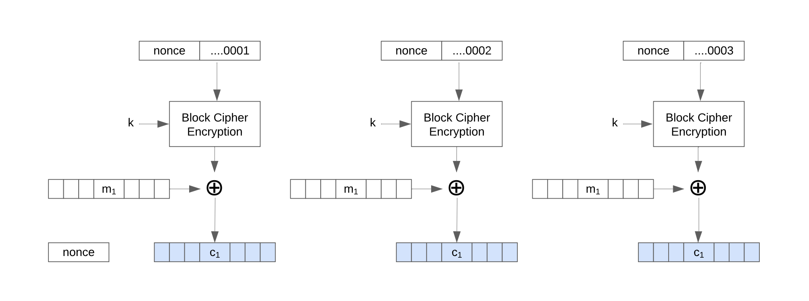Padding in AES
Padding is used in AES to ensure that the plaintext is a multiple of the block size, the padding bytes are added to make the total length a multiple of 16 bytes.

One-way functions
A one-way function is a mathematical function that is easy to compute in one direction but computationally infeasible to inverse of the function.
Complexity theory
Complexity theory studies the resources required to solve computational
problems, such as time and space. It classifies problems based on their
inherent difficulty and the efficiency of algorithms that solve them.
The focus is on the algorithm, not on implementation or hardware.
Complexity theory distinguishes problems solvable in polynomial time
from those that are not.
RSA
RSA is a public-key cryptosystem that uses the product of two large prime numbers for encryption and decryption. It is widely used for secure data transmission and digital signatures.
Remark
The name RSA stands for Rivest, Shamir, and Adleman, the three inventors of the algorithm.
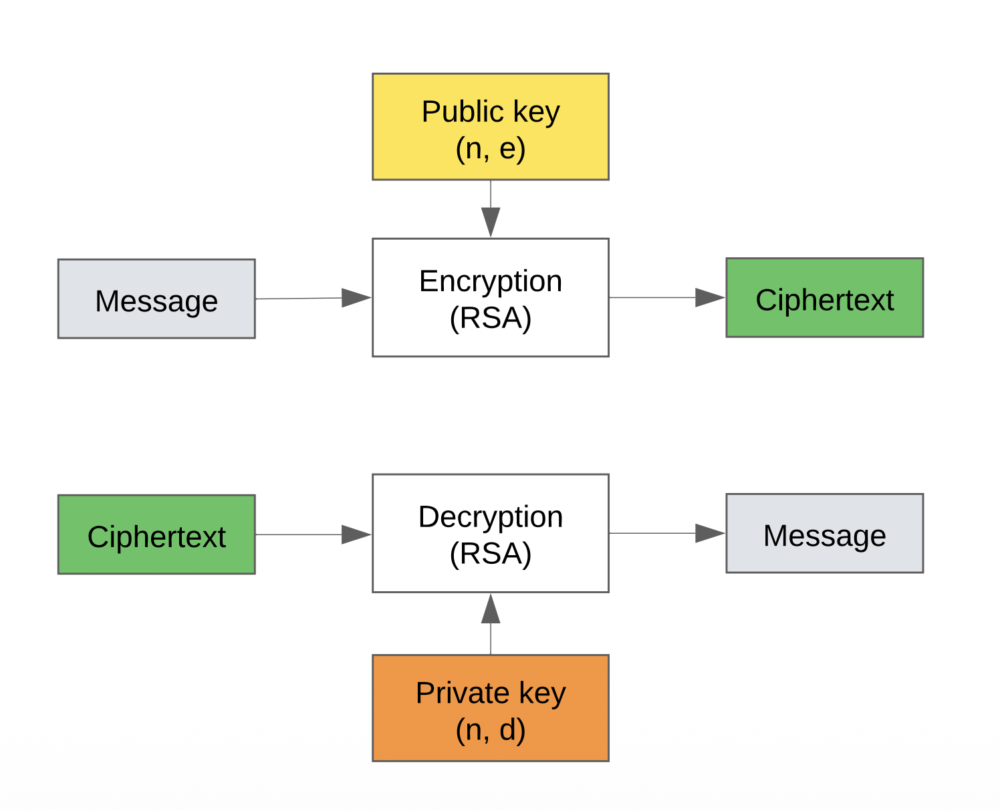Euler's totient function
Definition
Euler's totient function $\phi(n)$ counts the positive integers up to $n$ that are relatively prime to $n$. For two distinct prime numbers $p$ and $q$, $\phi(p \cdot q) = (p-1)(q-1)$.
RSA Algorithm
-
Key Generation:
Select two large prime numbers $p$ and $q$.
Compute $n = p \cdot q$.
Compute the totient $\phi(n) = (p-1)(q-1)$.
-
Choose an integer $e$ such that $1 < e < \phi(n)$ and $\gcd(e, \phi(n)) = 1$.
-
Compute $d$ such that $d \cdot e \equiv 1 \mod \phi(n)$.
-
The public key is $(e, n)$ and the private key is $(d, n)$.
-
Encryption:
$$ C = P^e \mod n $$ -
Decryption:
$$ P = C^d \mod n $$
Digital signatures
A digital signature is a cryptographic technique used to verify the authenticity and integrity of a digital message or document. It provides assurance that the message was created by a known sender and has not been altered in transit. Signatures rely on asymmetric cryptography, where the sender uses their private key to sign the message, and the recipient uses the sender's public key to verify the signature.
Signing a message
To sign a message $x$, the sender computes a hash of the message using a cryptographic hash function $h(x)$, then encrypts the hash with their private key $d$ to create the digital signature $S$:
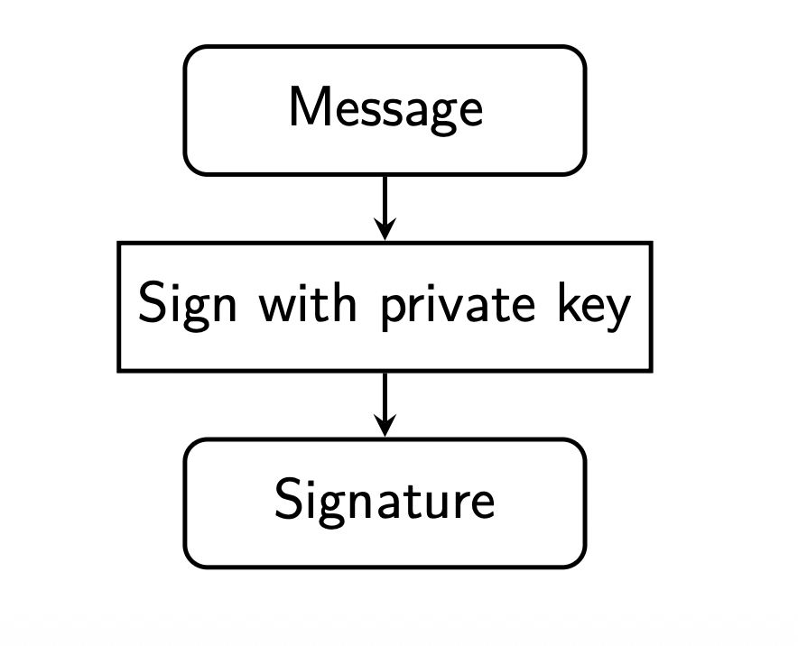Verifying a signature
To verify the signature, the recipient decrypts the signature $S$ using the sender's public key $e$ to obtain the hash value $h(x)$, then computes the hash of the received message and compares it to the decrypted hash. If they match, the signature is valid.
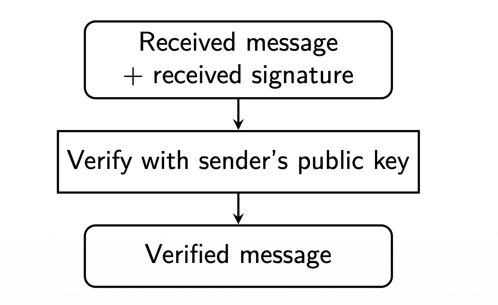RSA signing and verification
The same RSA operations can be used either for encryption or for signing, depending on which key is used.
-
Signing:
$$ S = h(x)^d \mod n $$ -
Verifying:
$$ h(x) \stackrel{?}{=} S^e \mod n $$
Security properties of hash functions
A secure hash function should have the following properties:
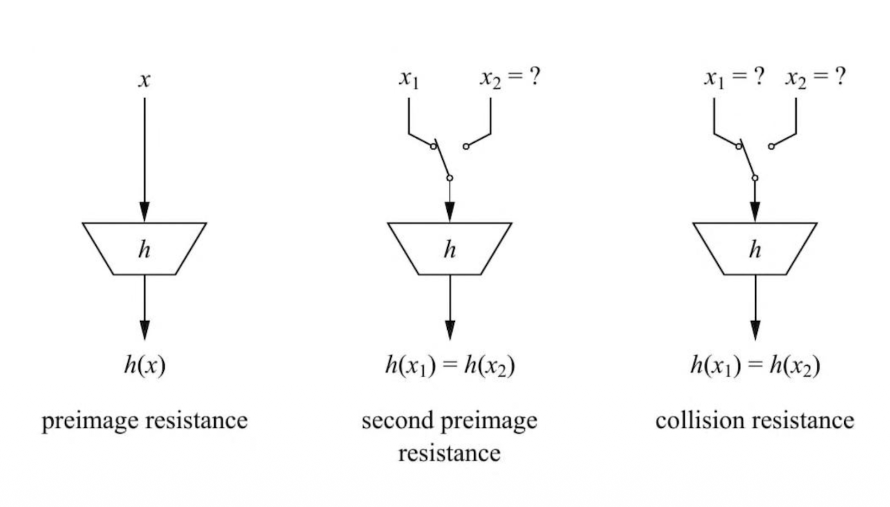-
Preimage resistance: Given a hash value $h$, it is computationally infeasible to find a message $x$ such that $h(x) = h$.
-
Second preimage resistance: Given a message $x_1$, it is computationally infeasible to find a different message $x_2$ such that $h(x_1) = h(x_2)$.
-
Collision resistance: It is computationally infeasible to find two different messages $x_1$ and $x_2$ such that $h(x_1) = h(x_2)$.
Requirements for cryptographic hash functions
-
Efficiency:
The function should be fast to compute for any input size.
-
Avalanche effect:
A small change in the input should drastically change the output.
-
Preimage resistance:
Given a hash output, it should be infeasible to find an input that produces it.
-
Second preimage resistance:
Given one input, it should be infeasible to find another input with the same hash.
-
Collision resistance:
It should be infeasible to find two different inputs that hash to the same value.
Compression-based hash functions, Merkle-Damgård constructions
The Merkle-Damgård construction is a method for building cryptographic hash functions from a fixed-size compression function. It processes the input message in fixed-size blocks, updating an internal state with each block using the compression function. The final hash value is produced after all blocks have been processed.
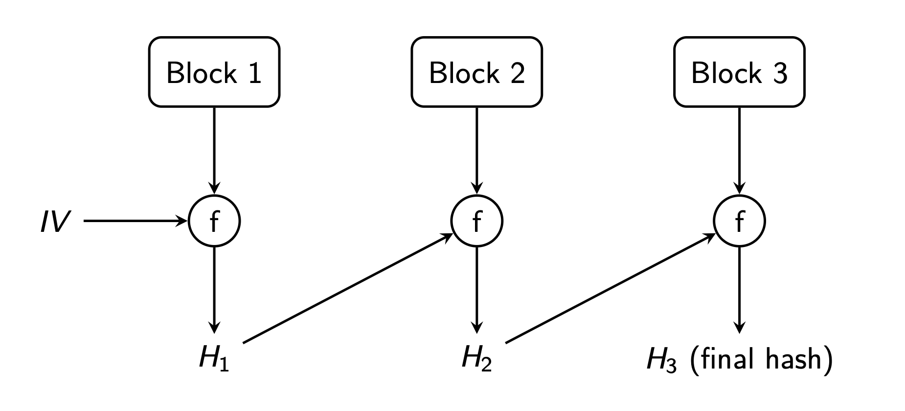Properties
-
Handles messages of arbitrary length:
Any message, short or long, can be processed by splitting it into fixed-size blocks.
-
Memory efficiency:
Only the current block and intermediate hash need to be stored, not the entire message.
-
Strong security properties:
Small changes in the message produce a completely different hash, and security proofs rely on the compression function.
-
Modularity and flexibility:
Different secure compression functions can be used without changing the overall structure.
Sponge functions
A sponge function is a type of cryptographic hash function that processes input data of arbitrary length to produce an output of arbitrary length. It operates in two phases: the absorbing phase, where input data is mixed into an internal state, and the squeezing phase, where output data is extracted from the state. XOR and other operations are used to mix the data thoroughly.
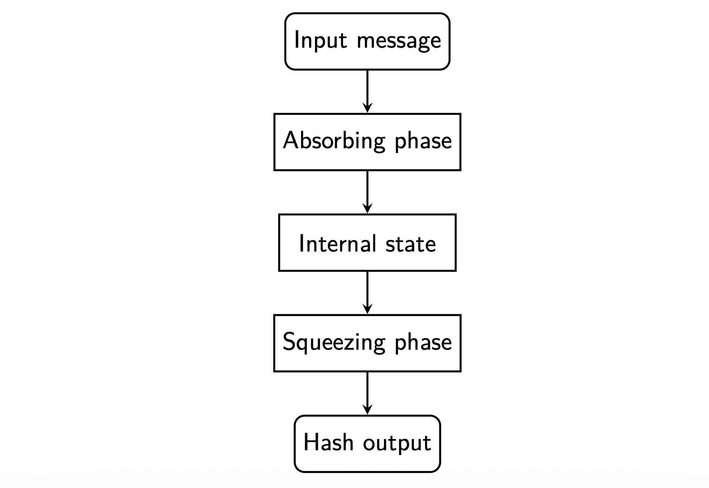Properties
-
Flexible output length:
Can produce hashes of arbitrary length, unlike fixed-length Merkle-Dåmgard constructions.
-
Stronger security properties:
Resistant to length-extension attacks that affect some Merkle-Dåmgard hashes.
-
Unified design:
The same structure can be used for hashing, message authentication codes, and pseudo-random number generation.
-
Efficient for large data:
Processes input block by block without needing to store the entire message in memory.
SHA, Secure Hash Algorithm
SHA is a family of cryptographic hash functions designed to provide data integrity and security.
-
SHA-0:
Merkle-Damgård construction; withdrawn due to a design flaw; never widely used.
-
SHA-1:
Merkle-Damgård construction; considered insecure today; vulnerable to collision attacks.
-
SHA-2:
Merkle-Damgård construction; available in four variants: SHA-224, SHA-256, SHA-384, SHA-512. The number indicates the hash length in bits.
-
SHA-3, Keccak:
Sponge construction; also available in four variants: SHA3-224, SHA3-256, SHA3-384, SHA3-512.
BLAKE Hash Functions
< BLAKE is a family of cryptographic hash functions based on the BLAKE construction, which is a variant of the sponge construction. It was designed to be faster and more secure than SHA-2.
-
BLAKE2:
BLAKE2 is based on the HAIFA construction, an improved Merkle-Damgård variant with built-in salting, counters, and optional tree hashing for parallelism. It is fast and optimized for many platforms, including single-core and multi-core systems.
-
BLAKE3:
BLAKE3 uses a Merkle-tree based structure and internal BLAKE2-style permutation functions, offering very high performance and parallelism.
Remark
Both BLAKE2 and BLAKE3 are widely available, for example included in OpenSSL.
Keyed hashing
Keyed hashing involves using a secret key in conjunction with a hash function to produce a hash value that provides both data integrity and authenticity.
Message Authentication Code, MAC
A Message Authentication Code is a cryptographic technique used to ensure the integrity and authenticity of a message. It combines a secret key with the message data to produce a tag that can be verified by the recipient.
HMAC
HMAC is a specific type of MAC that uses a cryptographic hash function along with a secret key. It provides strong security properties and is widely used in various applications, including secure communications protocols.
HMAC algorithm
-
Apply the key with inner padding or ipad, to the message and hash it.
-
Apply the key with outer padding or opad, to the result and hash again.
CMAC
CMAC is a block cipher-based MAC that uses a symmetric key block cipher algorithm, such as AES, to provide data integrity and authenticity. It is designed to be secure and efficient for use in various applications.
CMAC algorithm
The message is divided into blocks.
-
Each block is processed with the block cipher using a secret key $K$.
The final block produces the CMAC output.
Authenticated encryption
Authenticated encryption is a cryptographic technique that combines encryption and authentication to provide both confidentiality and integrity for data. It ensures that the data is not only kept secret but also has not been tampered with during transmission.
Formula
$$ \text{AD}(K , C , T ) = P $$where $AD$ stands for authenticated encryption, $P$ is the plaintext, $K$ the key, $C$ the ciphertext, and $T$ the authentication tag.
Authenticated encryption workflow
Authenticated encryption ensures both the confidentiality of the message and its integrity. Two common approaches:

-
Encrypt-then-MAC:
This method first encrypts the plaintext to create a ciphertext, ensuring confidentiality. Then, it generates a Message Authentication Code (MAC) over the resulting ciphertext. This approach is considered the most secure because the MAC protects the encrypted data, and any tampering will be detected before decryption.
-
MAC-then-Encrypt:
This method first generates a MAC over the original plaintext to ensure its integrity. Then, it encrypts both the plaintext and the MAC together. This approach is less secure because the MAC is based on the unencrypted data, making it vulnerable to certain attacks, such as padding oracle attacks.
AES-GCM, Advanced Encryption Standard, Galois/Counter Mode
AES-GCM is a widely used authenticated encryption mode that provides both confidentiality and integrity. It uses AES in CTR mode for encryption and a Galois field multiplication mechanism to generate an authentication tag. AES-GCM is fast, parallelizable, and supports associated data, making it ideal for secure communication protocols such as TLS and IPsec. It requires a unique nonce for each encryption to ensure security.
OCB, Offset Codebook
OCB is a highly efficient authenticated encryption mode that combines encryption and authentication in a single pass, similar to AES-GCM. It uses AES to encrypt data while generating a message authentication code or MAC, internally, ensuring both confidentiality and integrity. OCB is faster than many other modes because it processes data in parallel and requires only one encryption call per block. However, it is less widely adopted due to patent restrictions, and AES-GCM is more commonly used in practice.